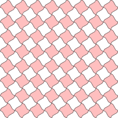

Asymptote Source Code Blocks in Org Mode
Table of Contents
Introduction
Asymptote is a powerful descriptive vector graphics language with a coordinate-based framework for technical drawing. Labels and equations are typeset with LaTeX. It is distributed with the GNU Lesser General Public License.
Asymptote can produce graphics in any format supported by ImageMagick, but it excels at producing PostScript files suited for typesetting with LaTeX.
Requirements and Setup
Asymptote is distributed as source code at SourceForge. Binary files
are available for Linux and Windows. OS X users can install
Asymptote with brew or MacPorts.
There is an Emacs mode, asy-mode, for editing Asymptote files. The file asy-mode.el is distributed with Asymptote. Instructions for enabling asy-mode are here.
To configure Asymptote source code blocks in Org mode, add the
appropriate dotted pair to org-babel-load-languages
(org-babel-do-load-languages 'org-babel-load-languages '((asymptote . t)))
Org Mode Features for Asymptote Source Code Blocks
Header Arguments
Asymptote is a language designed to produce graphics files. The
default :results header argument is “file”. The default :exports
header argument is “results”.
The :file header argument is required. The extension of the file
name passed to :file determines the graphics format produced by the
Asymptote source code block. The default output file format is pdf.
The language-specific header argument, :cmdline, can be used to pass
options to Asymptote. The full set of options are described in info
asy.
Sessions
Asymptote does not support sessions.
Result Types
Asymptote produces graphic files.
Examples of Use
The following source code block produced the Asymptote logo used at the top of this page.
#+begin_src asymptote :file images/asymptote.png
import three;
size(560,320,IgnoreAspect);
size3(140,80,15);
currentprojection=perspective(-2,20,10,up=Y);
currentlight=White;
real a=-0.4;
real b=0.95;
real y1=-5;
real y2=-3y1/2;
path A=(a,0){dir(10)}::{dir(89.5)}(0,y2);
path B=(0,y1){dir(88.3)}::{dir(20)}(b,0);
real c=0.5*a;
pair z=(0,2.5);
transform t=scale(1,15);
transform T=inverse(scale(t.yy,t.xx));
path[] g=shift(0,1.979)*scale(0.01)*t*
texpath(Label("{\it symptote}",z,0.25*E+0.169S,fontsize(24pt)));
pair w=(0,1.7);
pair u=intersectionpoint(A,w-1--w);
real h=0.25*linewidth();
real hy=(T*(h,h)).x;
g.push(t*((a,hy)--(b,hy)..(b+hy,0)..(b,-hy)--(a,-hy)..(a-hy,0)..cycle));
g.push(T*((h,y1)--(h,y2)..(0,y2+h)..(-h,y2)--(-h,y1)..(0,y1-h)..cycle));
g.push(shift(0,w.y)*t*((u.x,hy)--(w.x,hy)..(w.x+hy,0)..(w.x,-hy)--(u.x,-hy)..(u.x-hy,0)..cycle));
real f=0.75;
g.push(point(A,0)--shift(-f*hy,f*h)*A--point(A,1)--shift(f*hy,-f*h)*reverse(A)--cycle);
g.push(point(B,0)--shift(f*hy,-f*h)*B--point(B,1)--shift(-f*hy,f*h)*reverse(B)--cycle);
triple H=-0.1Z;
material m=material(lightgray,shininess=1.0);
for(path p : g)
draw(extrude(p,H),m);
surface s=surface(g);
draw(s,red,nolight);
draw(shift(H)*s,m);
#+end_src
import three;
size(560,320,IgnoreAspect);
size3(140,80,15);
currentprojection=perspective(-2,20,10,up=Y);
currentlight=White;
real a=-0.4;
real b=0.95;
real y1=-5;
real y2=-3y1/2;
path A=(a,0){dir(10)}::{dir(89.5)}(0,y2);
path B=(0,y1){dir(88.3)}::{dir(20)}(b,0);
real c=0.5*a;
pair z=(0,2.5);
transform t=scale(1,15);
transform T=inverse(scale(t.yy,t.xx));
path[] g=shift(0,1.979)*scale(0.01)*t*
texpath(Label("{\it symptote}",z,0.25*E+0.169S,fontsize(24pt)));
pair w=(0,1.7);
pair u=intersectionpoint(A,w-1--w);
real h=0.25*linewidth();
real hy=(T*(h,h)).x;
g.push(t*((a,hy)--(b,hy)..(b+hy,0)..(b,-hy)--(a,-hy)..(a-hy,0)..cycle));
g.push(T*((h,y1)--(h,y2)..(0,y2+h)..(-h,y2)--(-h,y1)..(0,y1-h)..cycle));
g.push(shift(0,w.y)*t*((u.x,hy)--(w.x,hy)..(w.x+hy,0)..(w.x,-hy)--(u.x,-hy)..(u.x-hy,0)..cycle));
real f=0.75;
g.push(point(A,0)--shift(-f*hy,f*h)*A--point(A,1)--shift(f*hy,-f*h)*reverse(A)--cycle);
g.push(point(B,0)--shift(f*hy,-f*h)*B--point(B,1)--shift(-f*hy,f*h)*reverse(B)--cycle);
triple H=-0.1Z;
material m=material(lightgray,shininess=1.0);
for(path p : g)
draw(extrude(p,H),m);
surface s=surface(g);
draw(s,red,nolight);
draw(shift(H)*s,m);
The following source code block was adapted from code found in the gallery of Asymptote examples by Gaétan Marris.
#+header: :var n=8
#+begin_src asymptote :file images/asy-tile.png
import geometry;
size(7cm,0);
picture pic;
// on définit une courbe reliant les points (0,1) et (1,0)
path c=(0,1){dir(-5)}..{dir(-5)}(1,0);
// à l'aide de trois rotations, on définit
// le motif (dans un carré de 2 sur 2) ...
path motif=buildcycle(c,rotate(90)*c,
rotate(180)*c,rotate(-90)*c);
filldraw(pic,motif,lightred+white,black);
// ... et une double boucle pour "paver"
// suivant (Ox) et suivant (Oy)
for(int i=0; i<n; ++i)
{
for(int j=0; j<n; ++j)
{
add(shift(2*i,2*j)*pic);
}
}
#+end_src
import geometry;
size(7cm,0);
picture pic;
// on définit une courbe reliant les points (0,1) et (1,0)
path c=(0,1){dir(-5)}..{dir(-5)}(1,0);
// à l'aide de trois rotations, on définit
// le motif (dans un carré de 2 sur 2) ...
path motif=buildcycle(c,rotate(90)*c,
rotate(180)*c,rotate(-90)*c);
filldraw(pic,motif,lightred+white,black);
// ... et une double boucle pour "paver"
// suivant (Ox) et suivant (Oy)
for(int i=0; i<n; ++i)
{
for(int j=0; j<n; ++j)
{
add(shift(2*i,2*j)*pic);
}
}
